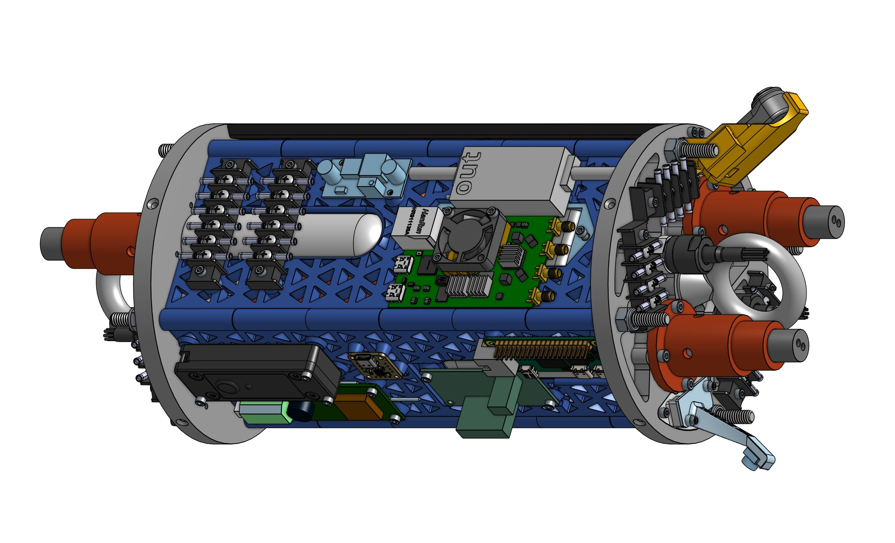
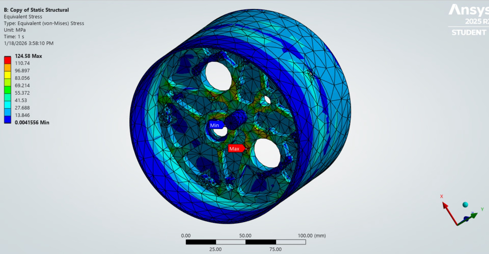
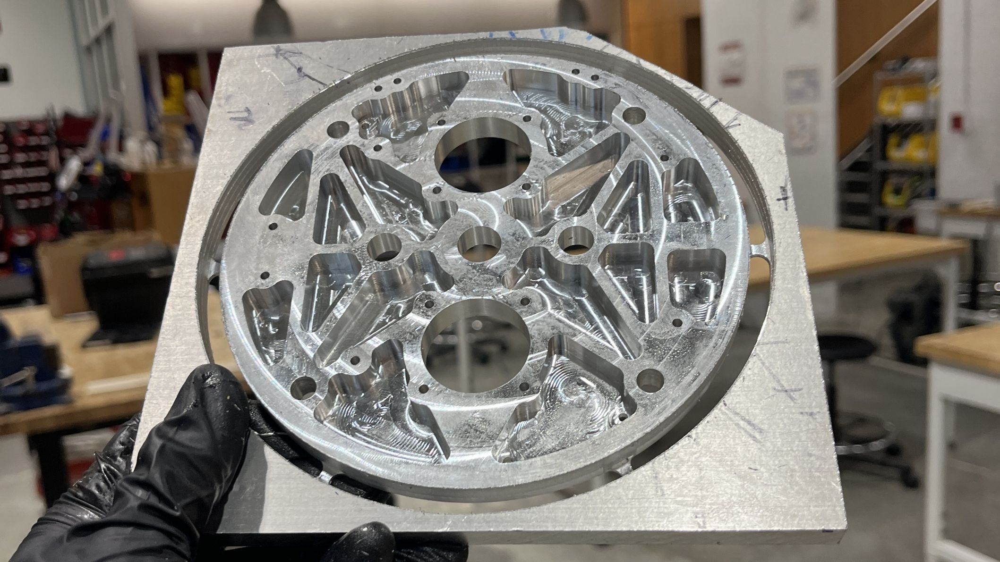
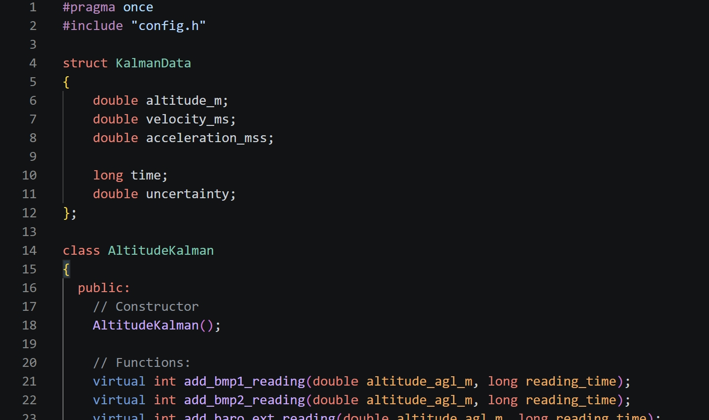
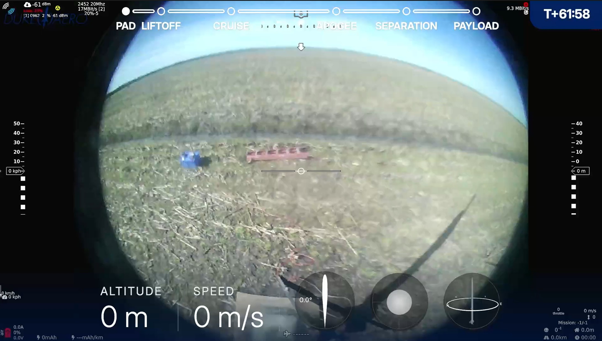
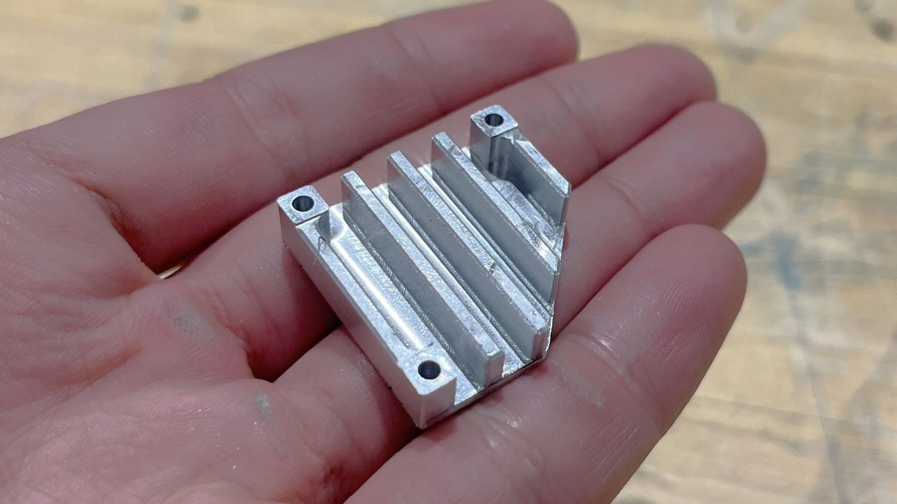

AVIONICS BAY
COMPREHENSIVE AVIONICS PACKAGE TARGETING 30,000 FT ABOVE THE TEXAS DESERT
As the Avionics & Separation Lead for Devil's Advocate, Duke AERO's 2025-2026 rocket, it was my job to lead the development of an avionics system that will control and monitor the rocket to target precisely 30,000 feet in apogee.
Preliminary Analysis
Drawing on lessons learned from Duke AERO's previous rocket, Perseus, where recovery volume was highly limited, I made the decision to prioritize avionics bay volume reduction early in the design process to make more room for recovery devices.
Our objective was to decrease avionics bay length by approximately 20% while maintaining sufficient mounting area for avionics hardware and volume for critical components such as battery, black box, and CO₂ deployment cartridges. This led to the development of a completely novel avionics bay layout. The AvBay structure was then designed by Hunter Cullina, with isogrid interlocking panels and truss rods connecting two bulkheads.
Hover to compare with previous AvBay design
Subsystems
Separation System

Keep It Simple, Stupid
The single most important task of the Avionics Bay is to successfully trigger separation events of the rocket to deploy recovery parachutes. Each separation event is quadruple-redundant, with 2 CO2 cartridges and 2 e-matches per cartridge, controlled by 2 flight computers. The use of tried-and-tested Tinder Rocketry Raptor CO2 system ensures repeatable and reliable separation without relying on messy black powder and thus maintains effectiveness even at high altitude.
Blow It Up, Or Blow It Out
The increased recovery volume also necessitates larger CO2 canisters to ensure consistent separation. A redesigned blast disk for the main recovery volume and the guided recovery module as a pseudo-blast disk for the drogue volume further complicates the design. I developed a theoretical calculation tool to preliminarily size the CO2 canisters, and together with Maddox Hussar, our Recovery System Lead, we conducted a series of mini separation tests to verify this.

Pressure Bulkhead
Recovery Volume Is Key
The pressure bulkheads are highly demanding components. They must withstand the high separation pressure and snatch force, serve as mounting point for electrical connectors and cameras, while being as light as possible. One major change to the bulkheads to minimize length was the switch from U bolt to eye bolt as the recovery attachment point.
Hover to compare U bolt and eye bolt designs
Light And Strong
The bulkhead design is primarily an FEA-driven iterative process. Load cases are generated from theoretical calculations and dynamic simulations of both separation pressure and snatch force, and the design is iterated on to minimize weight. More mounting points for electrical management and cameras means more complexity added without compromising the structural integrity of the bulkhead.
Aft bulkhead FEA performed by Hunter Cullina

Manufacturing
Machined out of 6061-T6 Aluminum , 80% of the stock material was removed over multiple CNC operations, allowing for complex contoured pockets with precise tolerances.
Hover over the parts to see manufacturing operations.

Access Hatch

Tactical Reload
Another novel feature of the AvBay is the introduction of an access hatch, allowing for battery replacement and code flashing without de-integrating the rocket. This allows for the use of much more power-hungry components without concerns about battery life.
Advanced Composites
An access hatch cutout on the Avionics body tube compromises the structural integrity of the tube, so two forged carbon fiber struts are needed to transfer the loads around the cutout. Instead of tapping screw holes directly into carbon fiber, I pioneered the use of threaded inserts molded directly into the struts. I also proposed a forged fiberglass hatch cover to ensure RF transparency, but fiberglass proved to be much harder to forge than carbon fiber and much more brittle, so the cover is eventually cut out of a fiberglass tube instead.

Avionics Suite

Triple Redundancy
For the first time ever, the Avionics sensor suite is triply redundant. Three barometers and three IMUs onboard allows for error voting and a more robust state-estimating Kalman filter. The Kalman filter originated from a TinyEKF implementation which allows for light-weight running on an ARM-based microcontroller.
ERIS Epsilon
The brain of the rocket, the fifth-generation ERIS Epsilon flight computer builds upon years of development and testing of the ERIS family of flight computers. Development led by my Avionics Co-Lead, Charlie Berens, ERIS Epsilon features a more compact form factor in keeping with the AvBay's volume reduction goals while retaining the same processing power and reliability by using a Teensy 4.1 microcontroller.


Doing The Basics Right
With the growing complexity of the AvBay, it is more important than ever to ensure that the basics are done right. This year's AvBay introduces a thorough standardization of wiring and connectors. All wire-to-wire connections feature vibration-proof ring terminals and terminal blocks, and service loop strain reliefs are added to all connection points.
Blackbox
Marking a critical shift in design, the blackbox now serves as the primary data logger. This considerably speeds up ERIS's processing speed by offloading the writing process and allows for more data to be logged with higher frequency. A more detailed write-up of the blackbox design can be found here: Blackbox (2024-2025).
Live Video

720p At Ultra Long Range
This is not the first time Duke AERO has attempted live video from the rocket, but it is the first time that we have attempted to do so for a 30,000 ft flight. The 3.4GHz, 720p live video system was developed by our talented team of Derock Xie and Alex Chindris, despite numerous setbacks caused by last-minute regulation changes. Controlled by a Radxa Zero 3e, the system consists of a Pluto SDR board and a 500mW RF power amplifier.
It Gets Hot In There
Data from our Bayboro test launch revealed that the AvBay can reach temperatures of up to 70°C. Under the Texas sun, this could get higher. Combined with the introduction of the power-hungry SDR meant that thermal management was a critical concern for the live video system. With less than 2 weeks before IREC 2026, I designed and machined an aluminum heat sink with active cooling from a 30mm fan.

After a whole year of development, the system is ready to take flight at IREC 2026. Check back in later for updates!